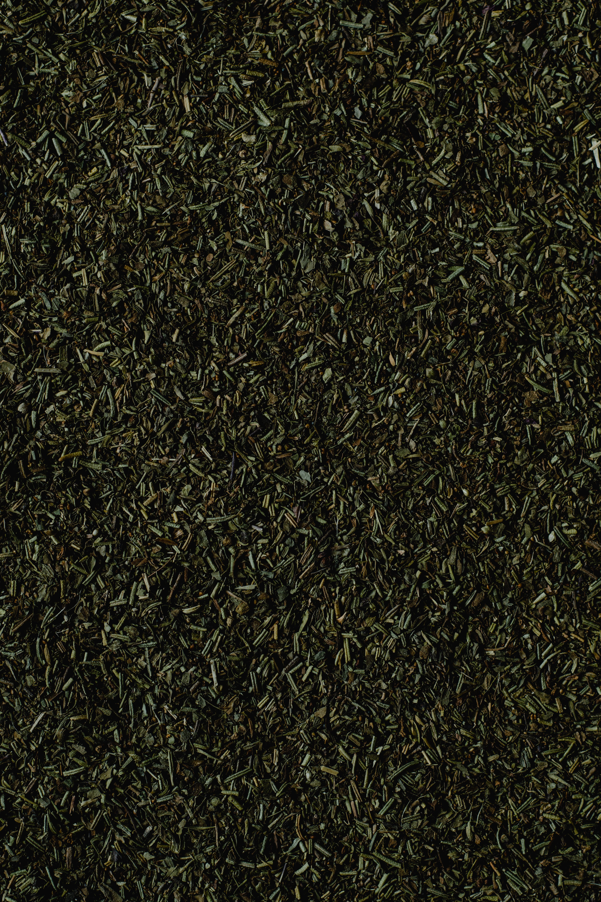
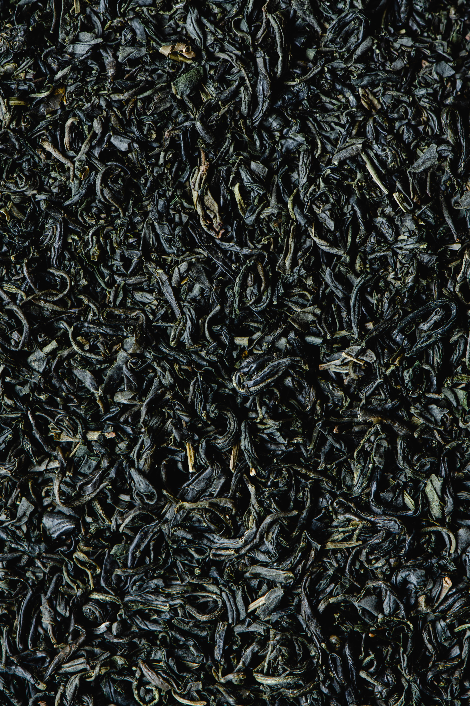
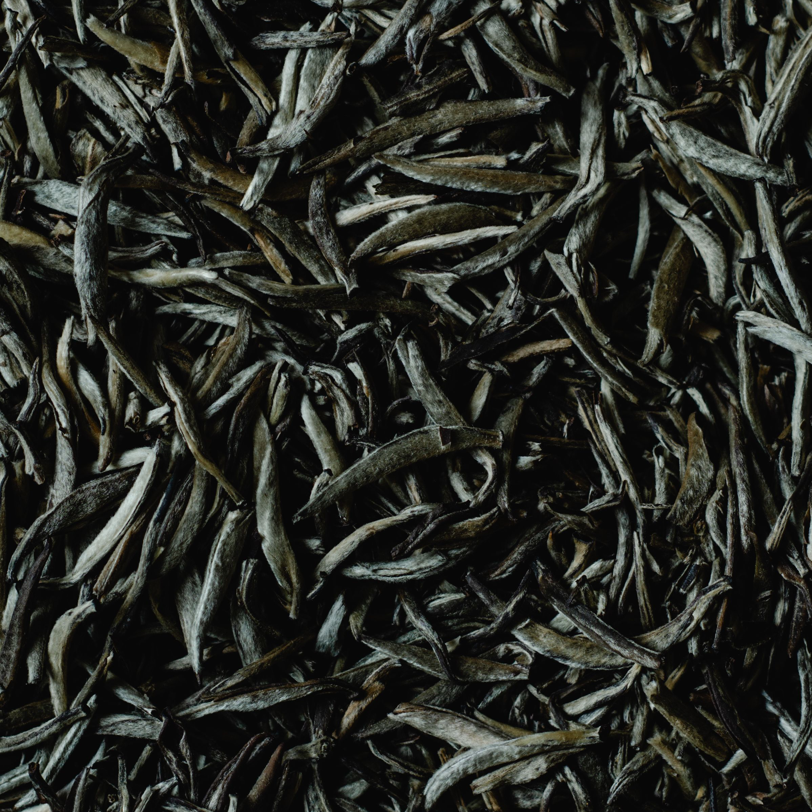
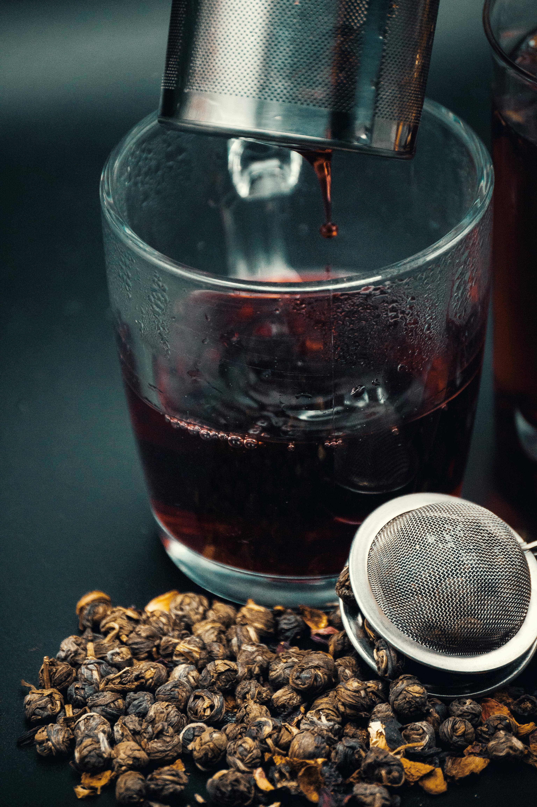
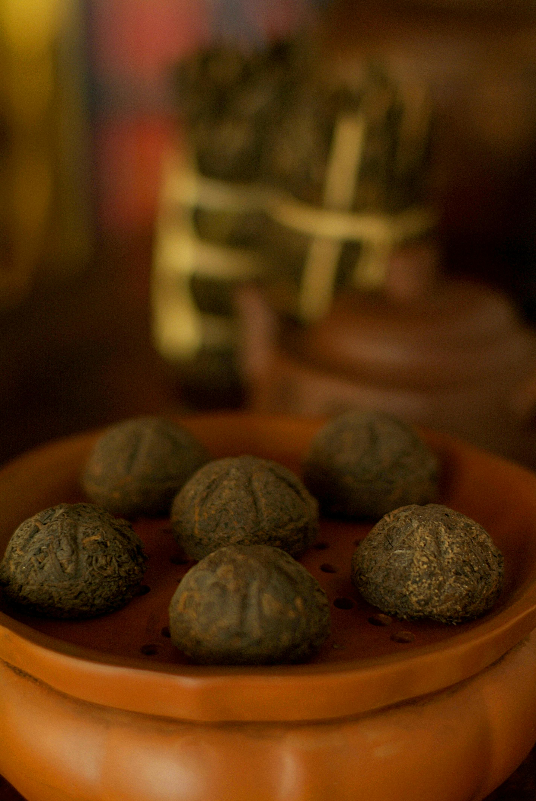
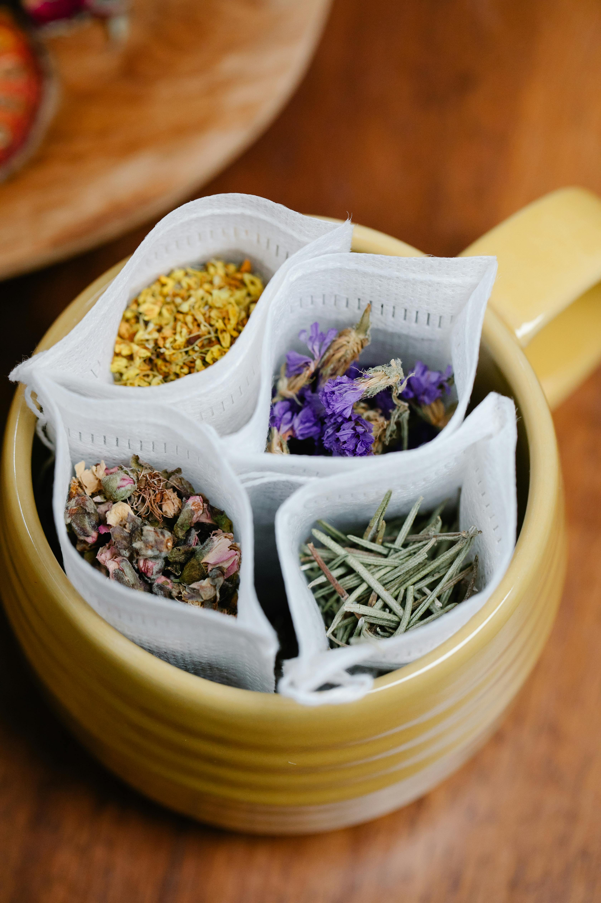

Herbata zielona poddawana jest minimalnej obróbce, dzięki czemu zachowuje naturalny kolor oraz wiele cennych składników odżywczych. Charakteryzuje się świeżym smakiem i delikatnym aromatem.

Herbata czarna przechodzi pełny proces fermentacji, który nadaje jej intensywny smak i ciemny kolor naparu. Jest bardzo popularna w Europie.

Herbata biała to jeden z najbardziej delikatnych gatunków herbaty. Powstaje z młodych pąków i najmłodszych liści krzewu herbacianego.

Oolong jest herbatą częściowo fermentowaną. Łączy cechy herbat zielonych i czarnych, oferując bogactwo smaków oraz aromatów.

Pu-erh to tradycyjna herbata chińska dojrzewająca przez długi czas. Ceniona jest za wyjątkowy smak i głęboki aromat.

Napary ziołowe przygotowuje się z mięty, rumianku, hibiskusa oraz wielu innych roślin. Są popularne ze względu na swoje właściwości relaksujące.